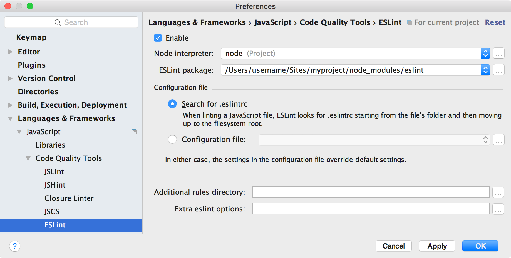

After reading this article, you’ll know:
- Why it’s a good idea to have consistent code style
- Which style guide we recommend for JavaScript code
- How to set up ESLint to check code style automatically
- Style suggestions for Meteor-specific patterns, such as Methods, publications, and more
Benefits of consistent style
Countless hours have been spent by developers throughout the years arguing over single vs. double quotes, where to put brackets, how many spaces to type, and all kinds of other cosmetic code style questions. These are all questions that have at best a tangential relationship to code quality, but are very easy to have opinions about because they are so visual.
While it’s not necessarily important whether your code base uses single or double quotes for string literals, there are huge benefits to making that decision once and having it be consistent across your organization. These benefits also apply to the Meteor and JavaScript development communities as a whole.
Easy to read code
The same way that you don’t read English sentences one word at a time, you don’t read code one token at a time. Mostly you just look at the shape of a certain expression, or the way it highlights in your editor, and assume what it does. If the style of every bit of code is consistent, that ensures that bits of code that look the same actually are the same - there isn’t any hidden punctuation or gotchas that you don’t expect, so you can focus on understanding the logic instead of the symbols. One example of this is indentation - while in JavaScript, indentation is not meaningful, it’s helpful to have all of your code consistently indented so that you don’t need to read all of the brackets in detail to see what is going on.
1 | // This code is misleading because it looks like both statements |
1 | // Much clearer! |
Automatic error checking
Having a consistent style means that it’s easier to adopt standard tools for error checking. For example, if you adopt a convention that you must always use let or const instead of var, you can now use a tool to ensure all of your variables are scoped the way you expect. That means you can avoid bugs where variables act in unexpected ways. Also, by enforcing that all variables are declared before use, you can easily catch typos before even running any code!
Deeper understanding
It’s hard to learn everything about a programming language at once. For example, programmers new to JavaScript often struggle with the var keyword and function scope. Using a community-recommended coding style with automatic linting can warn you about these pitfalls proactively. This means you can jump right into coding without learning about all of the edge cases of JavaScript ahead of time.
As you write more code and come up against the recommended style rules, you can take that as an opportunity to learn more about your programming language and how different people prefer to use it.
JavaScript style guide
Here at Meteor, we strongly believe that JavaScript is the best language to build web applications, for a variety of reasons. JavaScript is constantly improving, and the standards around ES2015 have really brought together the JavaScript community. Here are our recommendations about how to use ES2015 JavaScript in your app today.

An example of refactoring from JavaScript to ES2015
Use the ecmascript package
ECMAScript, the language standard on which every browser’s JavaScript implementation is based, has moved to yearly standards releases. The newest complete standard is ES2015, which includes some long-awaited and very significant improvements to the JavaScript language. Meteor’s ecmascript package compiles this standard down to regular JavaScript that all browsers can understand using the popular Babel compiler. It’s fully backwards compatible to “regular” JavaScript, so you don’t have to use any new features if you don’t want to. We’ve put a lot of effort into making advanced browser features like source maps work great with this package, so that you can debug your code using your favorite developer tools without having to see any of the compiled output.
The ecmascript package is included in all new apps and packages by default, and compiles all files with the .js file extension automatically. See the list of all ES2015 features supported by the ecmascript package.
To get the full experience, you should also use the es5-shim package which is included in all new apps by default. This means you can rely on runtime features like Array#forEach without worrying about which browsers support them.
All of the code samples in this guide and future Meteor tutorials will use all of the new ES2015 features. You can also read more about ES2015 and how to get started with it on the Meteor Blog:
Follow a JavaScript style guide
We recommend choosing and sticking to a JavaScript style guide and enforcing it with tools. A popular option that we recommend is the Airbnb style guide with the ES6 extensions (and optionally React extensions).
Check your code with ESLint
“Code linting” is the process of automatically checking your code for common errors or style problems. For example, ESLint can determine if you have made a typo in a variable name, or some part of your code is unreachable because of a poorly written if condition.
We recommend using the Airbnb eslint configuration which verifies the Airbnb styleguide.
Below, you can find directions for setting up automatic linting at many different stages of development. In general, you want to run the linter as often as possible, because it’s the fastest and easiest way to identify typos and small errors.
Installing and running ESLint
To setup ESLint in your application, you can install the following npm packages:
1 | meteor npm install --save-dev babel-eslint eslint-config-airbnb eslint-plugin-import eslint-plugin-meteor eslint-plugin-react eslint-plugin-jsx-a11y eslint-import-resolver-meteor eslint |
Meteor comes with npm bundled so that you can type meteor npm without worrying about installing it yourself. If you like, you can also use a globally installed npm command.
You can also add a eslintConfig section to your package.json to specify that you’d like to use the Airbnb config, and to enable ESLint-plugin-Meteor. You can also setup any extra rules you want to change, as well as adding a lint npm command:
1 | { |
To run the linter, you can now simply type:
1 | meteor npm run lint |
For more details, read the Getting Started directions from the ESLint website.
Integrating with your editor
Linting is the fastest way to find potential bugs in your code. Running a linter is usually faster than running your app or your unit tests, so it’s a good idea to run it all the time. Setting up linting in your editor can seem annoying at first since it will complain often when you save poorly-formatted code, but over time you’ll develop the muscle memory to just write well-formatted code in the first place. Here are some directions for setting up ESLint in different editors:
Sublime Text
You can install the Sublime Text packages that integrate them into the text editor. It’s generally recommended to use Package Control to add these packages. If you already have that setup, you can just add the these packages by name; if not, click the instructions links:
- Babel (for syntax highlighting – full instructions)
- SublimeLinter (full instructions)
- SublimeLinter-contrib-eslint (full instructions)
To get proper syntax highlighting, go to a .js file, then select the following through the View dropdown menu: Syntax -> Open all with current extension as… -> Babel -> JavaScript (Babel). If you are using React .jsx files, do the same from a .jsx file. If it’s working, you will see “JavaScript (Babel)” in the lower right hand corner of the window when you are on one of these files. Refer to the package readme for information on compatible color schemes.
A side note for Emmet users: You can use \
Atom
Using ESLint with Atom is simple. Just install these three packages:
1 | apm install language-babel |
Then restart (or reload by pressing Ctrl+Alt+R / Cmd+Opt+R) Atom to activate linting.
WebStorm
WebStorm provides these instructions for using ESLint. After you install the ESLint Node packages and set up your package.json, just enable ESLint and click “Apply”. You can configure how WebStorm should find your .eslintrc file, but on my machine it worked without any changes. It also automatically suggested switching to “JSX Harmony” syntax highlighting.

Linting can be activated on WebStorm on a project-by-project basis, or you can set ESLint as a default under Editor > Inspections, choosing the Default profile, checking “ESLint”, and applying.
Visual Studio Code
Using ESLint in VS Code requires installation of the 3rd party ESLint extension. In order to install the extension, follow these steps:
- Launch VS Code and open the quick open menu by typing
Ctrl+P - Paste
ext install vscode-eslintin the command window and pressEnter - Restart VS Code
Meteor code style
The section above talked about JavaScript code in general - you can easily apply it in any JavaScript application, not just with Meteor apps. However, there are some style questions that are Meteor-specific, in particular how to name and structure all of the different components of your app.
Collections
Collections should be named as a plural noun, in PascalCase. The name of the collection in the database (the first argument to the collection constructor) should be the same as the name of the JavaScript symbol.
1 | // Defining a collection |
Fields in the database should be camelCased just like your JavaScript variable names.
1 | // Inserting a document with camelCased field names |
Methods and publications
Method and publication names should be camelCased, and namespaced to the module they are in:
1 | // in imports/api/todos/methods.js |
Note that this code sample uses the ValidatedMethod package recommended in the Methods article. If you aren’t using that package, you can use the name as the property passed to Meteor.methods.
Here’s how this naming convention looks when applied to a publication:
1 | // Naming a publication |
Files, exports, and packages
You should use the ES2015 import and export features to manage your code. This will let you better understand the dependencies between different parts of your code, and it will be easy to know where to look if you need to read the source code of a dependency.
Each file in your app should represent one logical module. Avoid having catch-all utility modules that export a variety of unrelated functions and symbols. Often, this can mean that it’s good to have one class, UI component, or collection per file, but there are cases where it is OK to make an exception, for example if you have a UI component with a small sub-component that isn’t used outside of that file.
When a file represents a single class or UI component, the file should be named the same as the thing it defines, with the same capitalization. So if you have a file that exports a class:
1 | export default class ClickCounter { ... } |
This class should be defined inside a file called ClickCounter.js. When you import it, it’ll look like this:
1 | import ClickCounter from './ClickCounter.js'; |
Note that imports use relative paths, and include the file extension at the end of the file name.
For Atmosphere packages, as the older pre-1.3 api.export syntax allowed more than one export per package, you’ll tend to see non-default exports used for symbols. For instance:
1 | // You'll need to destructure here, as Meteor could export more symbols |
Templates and components
Since Spacebars templates are always global, can’t be imported and exported as modules, and need to have names that are completely unique across the whole app, we recommend naming your Blaze templates with the full path to the namespace, separated by underscores. Underscores are a great choice in this case because then you can easily type the name of the template as one symbol in JavaScript.
1 | <template name="Lists_show"> |
If this template is a “smart” component that loads server data and accesses the router, append _page to the name:
1 | <template name="Lists_show_page"> |
Often when you are dealing with templates or UI components, you’ll have several closely coupled files to manage. They could be two or more of HTML, CSS, and JavaScript files. In this case, we recommend putting these together in the same directory with the same name:
1 | # The Lists_show template from the Todos example app has 3 files: |
The whole directory or path should indicate that these templates are related to the Lists module, so it’s not necessary to reproduce that information in the file name. Read more about directory structure below.
If you are writing your UI in React, you don’t need to use the underscore-split names because you can import and export your components using the JavaScript module system.